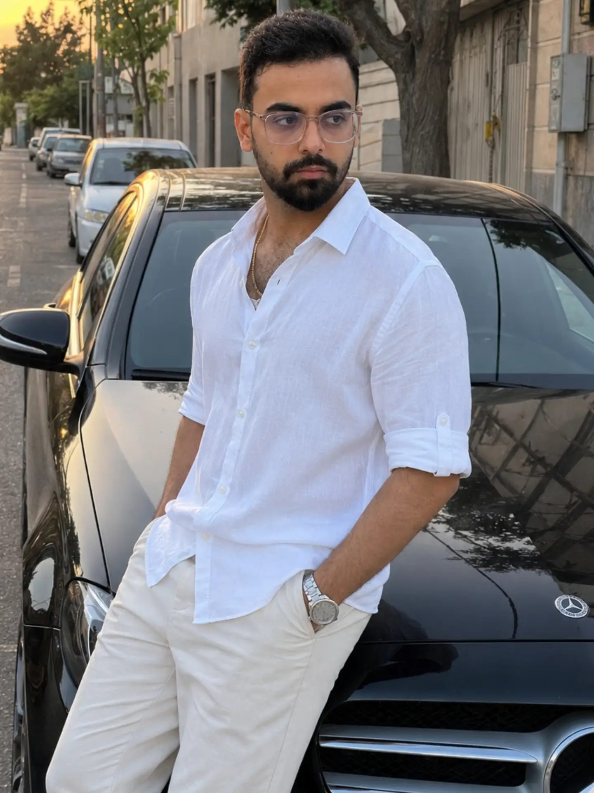

سامانهٔ یکپارچهٔ درمان

سلامت دیجیتال ۱۴۰۴
چهار نقش، یک تجربهٔ یکپارچه.
داشبوردهای اختصاصی پزشک، متخصص، منشی و مدیر؛ برای مدیریت پرونده، نوبتها و اطلاعات بیماران در یک سامانه.
آماده برای پروژه و فرصتهای همکاری
من علیرضا جابری هستم؛ مهندس نرم افزار.
چه یک کسبوکار کوچک داشته باشید، چه یک تیم در حال رشد، برای معرفی خدمات، دریافت درخواست مشتریان و مدیریت کارهای روزمره، وبسایت و نرمافزاری متناسب با نیازتان میسازم.
نرمافزاری متناسب با نیاز کسبوکار شما

نمونهکارهای منتخب
از داشبوردهای درمانی تا ردیابی زندهٔ خودرو؛
هر پروژه، یک مسئلهٔ متفاوت و یک تجربهٔ تازه.
سلامت دیجیتال ۱۴۰۴
داشبوردهای اختصاصی پزشک، متخصص، منشی و مدیر؛ برای مدیریت پرونده، نوبتها و اطلاعات بیماران در یک سامانه.

حملونقل هوشمند ۱۴۰۳
موقعیت زندهٔ خودروها، تاریخچهٔ مسیر و هشدارهای محدودهٔ جغرافیایی؛ کنار هم در یک داشبورد تعاملی.

ارتباطات علمی ۱۴۰۴
بستری برای ارتباط پژوهشگران و پیشنهاد همکار بر اساس زمینههای مشترک.

پایش تصویری ۱۴۰۳
ویدئوی زندهٔ داخل و بیرون خودرو، در کنار موقعیت آن روی نقشه.

همکاری آنلاین ۱۴۰۱–۱۴۰۲
از برنامهریزی و دعوت تا گفتوگوی زنده و تماس تصویری در سامانهٔ دیداربا.
نیاز یا ایدهتان را بگویید؛ با هم بررسی کنیم چه راهکاری برای کسبوکار شما مناسب است.
نگاه من به ساختن
نرمافزار باید کار را برای شما و کاربرانتان سادهتر کند. تصمیمهای فنی هم باید در خدمت همین هدف باشند.
آشنایی بیشتر در لینکدین (در پنجرهٔ جدید)محصولی میسازم که مسئلهٔ شما را حل کند و استفاده از آن ساده باشد.
اطلاعات، کاربران و فرایندهای پراکنده را در یک محیط منظم کنار هم قرار میدهم.
با اتصال سرویسها و خودکارسازی، کارهایی را که میشود به نرمافزار سپرد از دوش تیم برمیدارم.
ساختار پروژه را طوری پیش میبرم که اضافه کردن قابلیتهای بعدی و نگهداری آن قابل مدیریت باشد.
معرفی خدمات، مدیریت کارها و صرفهجویی در زمان شما.
از معرفی خدمات و دریافت درخواست تا پنل مدیریت و حساب کاربری؛ تجربهای متناسب با کار شما و نیاز مخاطبانتان طراحی و توسعه میدهم.
اگر محصولی دارید که باید یک قدم جلوتر برود، برای اضافه کردن قابلیت، اتصال سرویسها و بهتر کردن تجربهٔ کاربران کنارتان هستم.
کارهایی مثل پردازش اطلاعات، تولید محتوا و گردش درخواستها را به ابزارهای هوش مصنوعی و سرویسهای شما متصل میکنم.
مسیر حرفهای من
از توسعهٔ سامانههای زنده تا هدایت تیم فنی و آموزش؛ تجربهٔ من در کنار تیمها و روی پروژههای واقعی شکل گرفته است.
پروفایل حرفهای من (در پنجرهٔ جدید)تماموقت · تهران
از تا اکنون
در شکلدادن و هدایت تیم توسعه نقش دارم؛ از انتخاب روش ساخت محصول و مصاحبه با نیروهای جدید تا راهنمایی همتیمیها و بررسی کیفیت کار. تمرکزم تبدیل قابلیتهای پیچیده به تجربهای سریع، روشن و قابل استفاده برای کاربران است.
از تا اکنون
در ساخت سامانههای درمانی، مدیریت ناوگان و جلسات آنلاین مشارکت داشتهام. بخشهایی را توسعه دادهام که کاربران هر روز با آنها کار میکنند؛ تا اطلاعات و کارهای پیچیده، روی موبایل و دسکتاپ بهسادگی در دسترس باشند.
پارهوقت · تهران
تا
به دانشجویان کمک میکردم آموختههایشان را به پروژهٔ عملی تبدیل کنند. با بررسی تمرینها و بازخورد مشخص، آنها را در حل مسئله و بهتر کردن کیفیت کارشان همراهی میکردم.
پارهوقت · تهران
تا
در پروژههای عملی، کنار برنامهنویسان در حال یادگیری بودم؛ از پیدا کردن راهحل و رفع اشکالات تا منظمتر شدن ساختار کار. هدفم این بود که دلیل هر تصمیم را بفهمند و مستقلتر پروژه را پیش ببرند.
تماموقت · حضوری · اهواز
تا
بخش کاربری یک سامانهٔ مدیریت آبیاری را ساختم که وضعیت حسگرها، محدودههای آبیاری و کنترل شیرها را در لحظه در اختیار کاربر میگذاشت؛ تا اطلاعات فنی زمین به یک داشبورد قابلفهم و قابلکنترل تبدیل شود.
دانشگاه شهید چمران اهواز · ۱۳۹۶ تا ۱۴۰۰
همراهی در ساختن
چه به دنبال یک همتیمی باشید،
چه کسی برای ساختن پروژهتان.
برای توسعهٔ یک محصول جدید، تکمیل پروژهٔ موجود یا خودکارسازی بخشی از کارتان، از مسئله و نیازتان شروع کنیم.
دربارهٔ پروژه صحبت کنیم (واتساپ، پنجرهٔ جدید)اگر تجربهٔ من به نیاز تیمتان نزدیک است، خوشحال میشوم دربارهٔ موقعیت کاری، چالش فنی و شیوهٔ همکاری صحبت کنیم.
گفتوگو دربارهٔ فرصت شغلیمسیر روشن، قدمهای مشخص
نیاز، مخاطب و هدف پروژه را مرور میکنیم.
دربارهٔ محدودهٔ کار، زمان و هزینه توافق میکنیم.
پروژه را با بررسی و بازخورد پیش میبریم.
شروع یک آشنایی حرفهای
از پروژهتان بگویید، یا از فرصتی که در تیمتان دارید.
تماس مستقیم09224864605